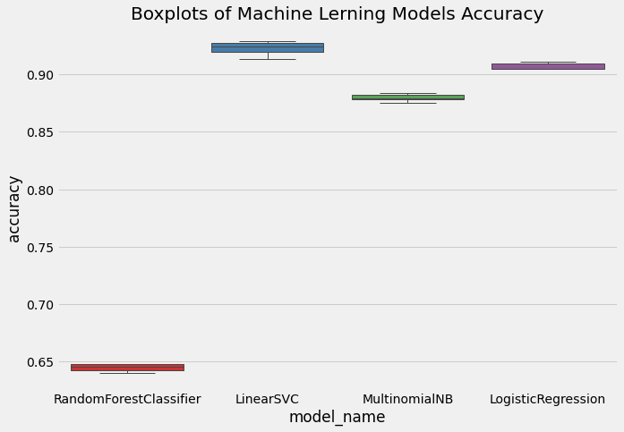

Comparison of Classification Models
As the dependent variable is categorical and binary, classification algorithms were chosen. Because they are suited to text classification tasks and easy to interpret, the following algorithms were chosen:
- 1. Random Forest
- 2. Multinomial Naive Bayes
- 3. Logistic Regression
- 4. Linear Support Vector Classification (SVC)
The models performances were compared using boxplots of the model accuracy score:

As seen in the image above, Linear SVC and Logistic Regression were the most accurate in predicting positive and negative outcomes from tweet text with 92% and 91% accuracy respectively. Linear SVC was then chosen for implementation.
Implementation of Linear SVC
Our data was best classified using Linear SVC, algorithm that finds the maximal margin that separates the data into the two categories (positive or negative sentiments). The performance of the model was satisfactory, with 92% accuracy, 92% of average precision and 92% of average recall.